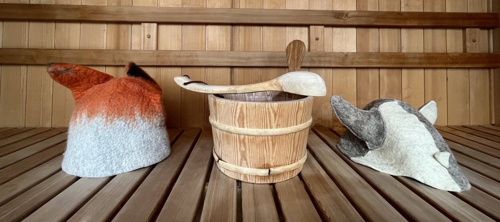

When Plants Attack
I witnessed a murder deep inside a Central American jungle last week. It's not likely that any authorities will ever get involved, but I tell you it was brutal. A fig vine was strangling a a 600 year old tree so it could steal its sunlight and I caught the whole thing on tape. A few hours later a different plant stabbed me with a hundred seed pods in an attempt to disperse its offspring through the forest. And finally, just minutes after that I came across a "walking tree" that has the ability to move up to one meter a year by selectively growing and killing off roots. The rain forest is a weird place.
In this week's video I dive into the strange and brutal world of plant homicide (herbacide?) and along the way get to interview Adrian Forsyth who just happens to have written nine books on tropical ecology.
Principles of The Wedge Workshop
The Wedge is that space between stimulus and response where the magic of consciousness transcends the body's innate reactions. When you jump into ice water and choose not to shiver, decide to put yourself a little harder in an endurance event, or calm your nerves when you feel under threat--you're using the Wedge. After years of writing about the topic I've decided to start offering some regular workshops to help people feel how their bodies adapt to different environments. After all, reading is one thing, but the body doesn't use words to understand the world--it operates through the language of sensation.
I call the workshop "Principles of The Wedge" -- because there isn't just one technique, but a whole different approach to how you think about your body's relationship to the world. Over the course of half a day there will be lectures, sauna sessions, ice bathing, breathwork and (light) outdoor exercise. Someday I will offer larger group experiences, but for now I'm limited by the size of my sauna--so there are just 5 spots. If there's a lot of interest I might hold a second workshop on Feb 26th as well. Email me to book your spot.
Details:
When: February 25, 2023
Time: 11:00 AM - evening
Where: Denver CO
Cost: $500

What's Happening In Wim Hof Land?
As you might be aware, there's been a fair amount of drama between me and Innerfire this month. After I released a video that exposed some unsavory business practices at the company, Enahm Hof (Wim's son) started issuing treats and takedown notices on my YouTube channel. Things were heated up and I decided to step away from the keyboard for a while and head down to Costa Rica and learn all about how plants murder each other. I expect that there will be some pretty significant updates to the story soon--possibly even this week. Stay tuned.